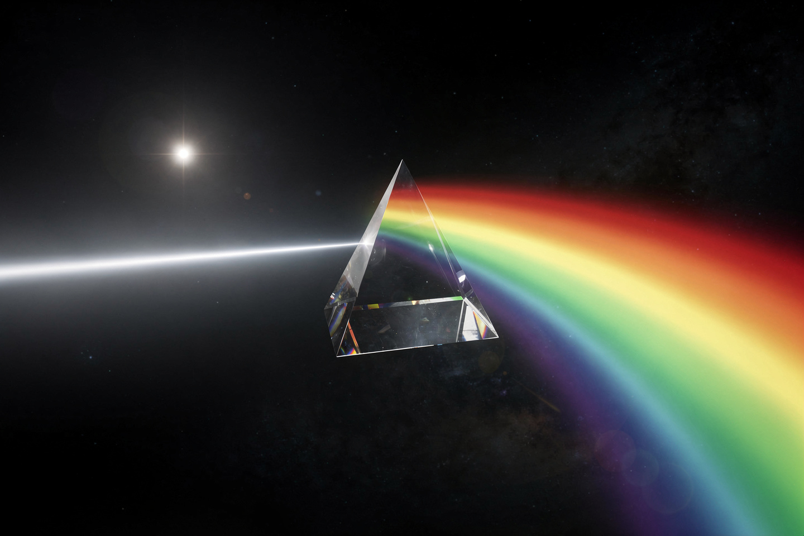

Рабочая заметка · термодинамика · часть XII
Излучение чёрного тела: как цвет выдаёт температуру звезды
Раскалённая кочерга, лампа накаливания и далёкая звезда светятся по одному и тому же закону — и именно попытка объяснить его до конца в 1900 году родила квантовую физику.
Любое тело светится тепловым излучением, и форма этого свечения зависит только от температуры — не от материала (для идеального «чёрного тела»). Закон Вина (1893) даёт цвет пика излучения, закон Стефана-Больцмана (1879/1884) — полную мощность, а формула Планка (1900) — точную форму всей кривой целиком, и именно попытка вывести эту формулу «с нуля» заставила Макса Планка предположить, что энергия излучается порциями — квантами. В этой заметке — все три закона с числами и то, как астрономы взвешивают звёзды по их цвету.

Три закона одного явления
| Закон | Что даёт | Формула |
|---|---|---|
| Вина (1893) | на какой длине волны пик излучения | λmax = b/T |
| Стефана-Больцмана (1879/84) | полная мощность излучения | j* = σT⁴ |
| Планка (1900) | полная форма кривой на каждой длине волны | B(λ,T) — см. §4 |
Все три говорят про один и тот же объект — абсолютно чёрное тело, идеальный поглотитель (и, значит, идеальный излучатель) любого падающего света. Реальные звёзды, лампы накаливания и раскалённые угли — на удивление хорошее приближение этой идеализации.
Закон Вина: цвет выдаёт температуру
Формулировка. Длина волны, на которую приходится пик излучения, обратно пропорциональна температуре:
Численный пример: тело нагрето до T = 2900 К (типичная нить лампы накаливания). Найдите длину волны пика излучения.
Пик у лампы накаливания — в инфракрасном диапазоне, НЕ в видимом: лампа греет больше, чем светит, а видимый жёлто-белый свет — лишь «хвост» кривой Планка (§4), выступающий в видимую область. Именно поэтому светодиодные лампы (с пиком точно в видимом свете) настолько энергоэффективнее.
Закон Стефана-Больцмана: мощность растёт вчетверо быстрее
Формулировка. Полная мощность излучения с единицы площади растёт как ЧЕТВЁРТАЯ степень температуры:
Четвёртая степень — не мелочь: нагрели тело вдвое по абсолютной температуре — оно светит не вдвое, а в 2⁴ = 16 раз мощнее. Это резкая, «взрывная» зависимость по сравнению с линейной.
Красный гигант Бетельгейзе холоднее Солнца (∼3500 К против 5800 К) — по одной лишь температуре он должен светить слабее. Но полная светимость зависит ещё и от ПЛОЩАДИ поверхности (j*·4πR²), а у Бетельгейзе радиус в сотни раз больше солнечного — гигантская площадь с лихвой компенсирует более низкую температуру, и звезда светит в десятки тысяч раз мощнее Солнца.
Формула Планка и рождение квантов
К концу XIX века классическая физика (закон Рэлея-Джинса) предсказывала, что чёрное тело должно излучать БЕСКОНЕЧНО много энергии на коротких волнах — абсурдный результат, названный «ультрафиолетовой катастрофой». Реальные тела так себя не ведут: у них есть чёткий пик и спад в обе стороны.
Двигайте ползунок температуры выше (§2, анимация) — форма всей кривой меняется целиком: пик смещается влево (закон Вина) И вся кривая поднимается (закон Стефана-Больцмана, площадь под кривой растёт как T⁴) одновременно, по одной формуле:
Планк в 1900 году нашёл эту формулу почти методом подбора — она идеально ложилась на экспериментальные данные, соединяя закон Вина (короткие волны) и закон Рэлея-Джинса (длинные волны) в одну кривую. Чтобы обосновать формулу теоретически, ему пришлось предположить, что энергия излучается не непрерывно, а порциями E = hν — квантами. Сам Планк долго считал это математической уловкой, не физической реальностью, пока Эйнштейн не использовал ту же идею для объяснения фотоэффекта (часть VI, уравнение Планка-Эйнштейна) в 1905 году.
Сквозной пример: взвесить звезду по цвету
Астрономы не могут долететь до звёзд с линейкой и термометром — весь набор данных о звезде обычно сводится к её спектру. Соберём оба закона в одной задаче.
Шаг 1 (закон Вина). Звезда B вдвое горячее Солнца (T☉ = 5800 К, TB = 11600 К) — значит, пик её спектра сдвинут вдвое ближе к ультрафиолету: звезда явно голубее Солнца на глаз/на спектрографе. Так измеряют T, ничего не зная о расстоянии до звезды.
Шаг 2 (закон Стефана-Больцмана). Если радиус звезды B такой же, как у Солнца, во сколько раз она светит мощнее?
Комбинируя оба измерения (цвет даёт T, яркость на известном расстоянии даёт полную светимость L), из закона Стефана-Больцмана L = 4πR²σT⁴ выражается и радиус звезды R — весь набор физических параметров звезды получен, не покидая Земли, только по её свету.
Куда это ведёт: реликтовое излучение
Самый точный природный спектр чёрного тела из когда-либо измеренных — не звезда, а сама Вселенная. Реликтовое (микроволновое фоновое) излучение — остывший свет, вырвавшийся на свободу примерно через 380 000 лет после Большого взрыва, когда Вселенная остыла достаточно, чтобы стать прозрачной. Сегодня, после 13.8 миллиардов лет расширения, оно остыло до T ≈ 2.725 К — и следует формуле Планка (§4) с точностью, которую не смогла бы обеспечить ни одна лабораторная печь на Земле.
Спутники COBE, WMAP и Planck измерили это излучение с фантастической точностью — крошечные отклонения от идеальной планковской кривой (порядка одной стотысячной) несут отпечаток самых первых мгновений существования Вселенной и легли в основу современной космологии, включая закон Хаббла и уравнения Фридмана (следующая заметка серии).
На сайте это отдельные законы, если хочется пройти глубже:
Закон излучения Планка · Закон смещения Вина · Закон Стефана-Больцмана
Эксперимент дома
Включите электрическую конфорку (спиральную, не индукционную) на максимум и наблюдайте за ней с безопасного расстояния, не прикасаясь, в течение минуты-двух.
Что заметить спираль проходит путь от тёмного (инфракрасное излучение, вы чувствуете тепло, но не видите свет) до тускло-красного, затем ярко-оранжевого — прямая иллюстрация закона Вина: нагрев сдвигает пик излучения от невидимого инфракрасного всё ближе к видимому спектру.
Направьте пульт от телевизора на камеру смартфона (не на глаз — инфракрасный светодиод пульта не виден напрямую) и нажмите любую кнопку, глядя на экран телефона в режиме камеры.
Что заметить на экране телефона видна мигающая светлая точка на кончике пульта — которую невооружённый глаз не видит вообще. Светодиод пульта излучает в ближнем инфракрасном (низкая «температура» по сравнению с видимым светом), а матрица камеры телефона (в отличие от человеческого глаза) чувствительна и к этому диапазону тоже.
Задачи для проверки
Сначала подумайте сами, затем откройте решение. Решение везде идёт по схеме: Дано → Закон → Решение → Ответ.
1. Поверхность звезды имеет температуру 5800 К (как Солнце). Найдите длину волны пика её излучения.
Дано T = 5800 К, b ≈ 0.0029 м·К.
Закон закон Вина (§2): λmax = b/T.
Решение λmax = 0.0029/5800 ≈ 5×10⁻⁷ м = 500 нм.
Ответ 500 нм — зелёная область видимого спектра (Солнце светит белым, потому что излучает во всём видимом диапазоне сразу, а не только на пике).
2. Температуру звезды увеличили втрое. Во сколько раз выросла её полная излучательная мощность с единицы площади?
Дано Tнов = 3T.
Закон закон Стефана-Больцмана (§3): j* ∝ T⁴.
Решение j*нов/j* = 3⁴ = 81.
Ответ в 81 раз.
3. Две звезды одинаковой температуры, но радиус звезды B втрое больше радиуса звезды A. Во сколько раз звезда B светит мощнее (по полной светимости)?
Дано TA = TB, RB = 3RA.
Закон полная светимость L = 4πR²σT⁴ (§3) — при равной T зависит только от площади, R².
Решение LB/LA = (RB/RA)² = 3² = 9.
Ответ в 9 раз — светимость растёт с площадью, не с радиусом напрямую.
4. Реликтовое излучение сегодня имеет температуру ≈2.7 К. На какой примерно длине волны приходится его пик? В каком диапазоне это (видимый, ИК, микроволновый)?
Дано T ≈ 2.7 К, b ≈ 0.0029 м·К.
Закон закон Вина (§2, §6).
Решение λmax = 0.0029/2.7 ≈ 1.07×10⁻³ м ≈ 1.1 мм.
Ответ ≈1.1 мм — микроволновый диапазон (отсюда и название «реликтовое МИКРОВОЛНОВОЕ фоновое излучение»).
5. Почему Планку пришлось предположить, что энергия излучается порциями (квантами), а не непрерывно, чтобы вывести правильную формулу спектра?
Закон «ультрафиолетовая катастрофа» и формула Планка (§4).
Решение классическая физика (закон Рэлея-Джинса, континуальное излучение) предсказывала бесконечный рост энергии на коротких волнах — абсурд, противоречащий эксперименту. Введение квантования (осциллятор может отдавать энергию только порциями E=hν) обрезает вклад высоких частот: чем выше частота, тем «дороже» отдельный квант, и статистически такие кванты испускаются всё реже — кривая идёт на спад вместо бесконечного роста.
Ответ квантование устраняет ультрафиолетовую катастрофу — без него классическая теория даёт физически бессмысленный (бесконечный) результат.
Опечатка, неверная формула, число не сходится, коряво объяснено — напишите нам: feedback@bridge42worlds.org. Каждое сообщение реально читается, разбирается и по нему вносится правка — это не «в стол».